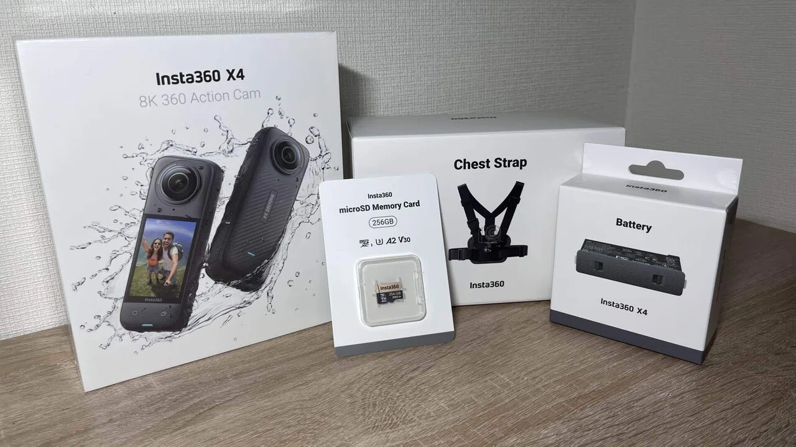
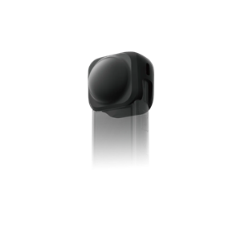
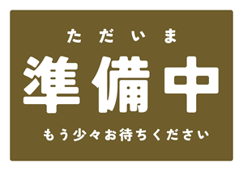

今までスマホや普通のカメラで撮っていた
SNSやYouTubeで360°映像に憧れていた
「自分でも撮ってみたい！」と思って購入した
初心者目線で感じた「操作しやすさ」「難しさ」
X3、X4、X5で悩んだ
正直、最初はどれを買うかかなり迷った。
X3は価格が落ち着いてて評判もいいし、X5は暗所撮影性能向上やレンズ交換ができるようになっている。
でも、自分は「初めてのアクションカメラ」だったから、あまりに高性能すぎるものを買っても使いこなせない気がした。
いろいろ調べて、最終的に選んだのがX4。
理由はシンプルで、画質・機能・価格のバランスがちょうどいいと感じたから。
8K撮影できるのにバッテリーも長持ちするっていう口コミも決め手になった。
X5ほどのプロ機能は必要ないけど、X3からの進化はしっかり感じられる。まさに「ちょうどいい中間モデル」って印象だった。
(2025年10月31日追記)
新モデルInsta360 X4Airが追加された。
このモデルめっちゃいい...
詳しく書いた記事があるから見といて。
開封＆外観レビュー

実際に撮影、編集してみた感想
編集時に画角を調整できるので、撮影時はあまり気を使う必要がないのが最大の利点。そして通常のカメラでは取れないような面白い絵が素人にも簡単に取れてしまう。
購入前の情報でもわかってはいたが、想像以上にレンズが傷つきやすい。岩に擦ってしまい、傷がついてしまった。（まぁ保護レンズを付けていたから交換すればいいんだけど）

X4はレンズ本体に傷がついてしまうと、交換できないからレンズキャップは必須。
Insta360 X4を買って分かった必須なアクセサリーをまとめた記事を書いたから合わせてみてほしい。 
Insta360 X4を使用してわかったメリット・デメリット
Insta360 X4は、ただのアクションカメラではなく、日常の記録や創作の幅を広げてくれるツール。今後はサイクリングや登山を中心に、普段の散歩や街歩き、さらにはVlog撮影など、もっと気軽なシーンでも活用していく予定。特に「見返したときに新しい発見がある映像」をテーマに、360度映像ならではの自由な編集を楽しんでいきたいと思っている。
これからおすすめしたい人
Insta360 X4は、ただのアクションカメラではなく、日常の記録や創作の幅を広げてくれるツール。今後はサイクリングや登山を中心に、普段の散歩や街歩き、さらにはVlog撮影など、もっと気軽なシーンでも活用していく予定。特に「見返したときに新しい発見がある映像」をテーマに、360度映像ならではの自由な編集を楽しんでいきたいと思っている。
まとめ
Insta360 X4は、ただのアクションカメラではなく、日常の記録や創作の幅を広げてくれるツール。今後はサイクリングや登山を中心に、普段の散歩や街歩き、さらにはVlog撮影など、もっと気軽なシーンでも活用していく予定。特に「見返したときに新しい発見がある映像」をテーマに、360度映像ならではの自由な編集を楽しんでいきたいと思っている。